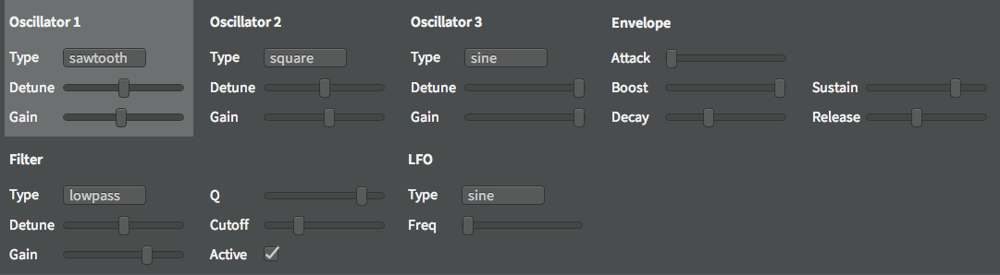

Building a Collaborative Digital Audio Workstation
Web Audio Conference 2015
Jan Monschke
Frontend Engineer @ SoundCloud from Berlin
Not really a musical background but
passionate about music
"Building a collaborative music production environment using emerging web standards"
Analyzing audio editors
- years of development and best practices
- common interface patterns
- minimum feature sets
Garageband

Ableton Live

Minimum Feature Set
- timeline (left to right)
- previews, depending on content
- tracks as rows
- recording, importing, drums, synth
Web Audio Editor
Recording
- Record audio
- Get live audio feedback for adjustments
- Upload recordings to server
- Select parts of audio
- Import audio files
Recording Node Graph

Drums
- Full control over speed and sounds
- Complex and varying drum loops
- Different drum sets
- Exact (!!!) timing
Drums Screenshot
Synthesizer
Synthesizer Node Graph
Synthesizer Screenshot
Collaboration
- First thought: simple, lock all the things!
- Hinders creative process
- Frustrating
- Inconsistency problems
Operational Transformation
Differential Synchronization
Differential Synchronization
- Much simpler* and solves many edge-cases
- Less features
- Works like a charm with Angular.JS (for me™)
- Almost no custom code in Controllers needed
Why collaboration?
- Remote band brainstorming
- Easier melody brainstorming
- Auto-save and auto-backup
Video collaboration (w/ WebRTC)
Scheduler

Demo
Critique
- Offline support? (files & sync)
- Performance problems? (native plugins, more complex UI)
- Too basic for production (more sounds, functionality)